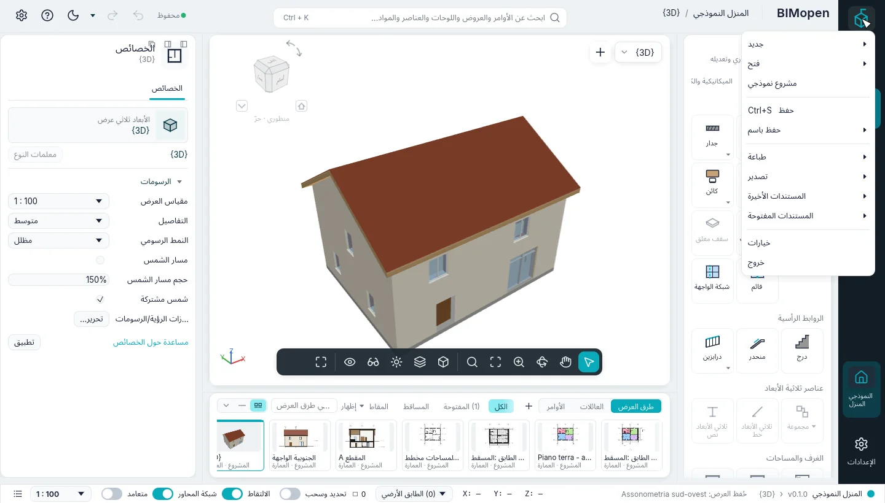
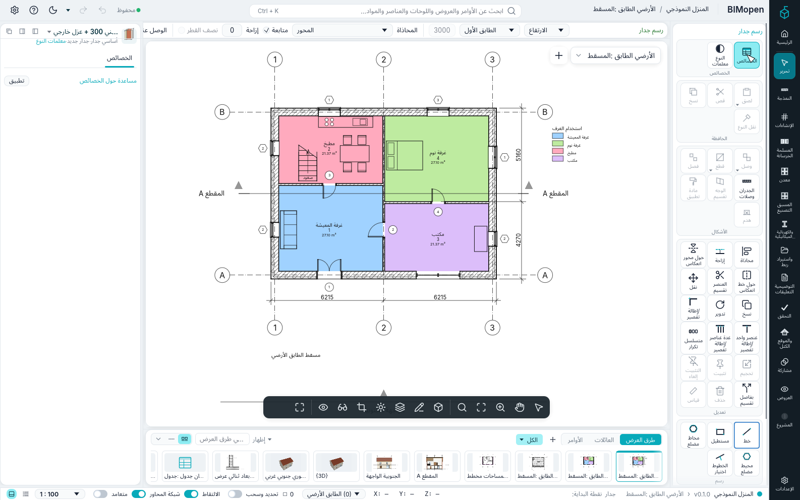
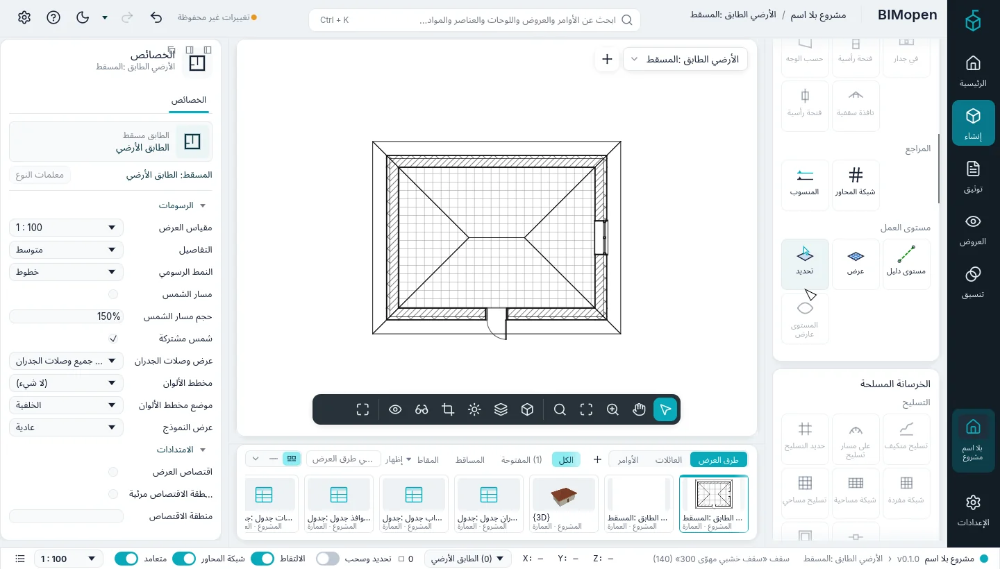
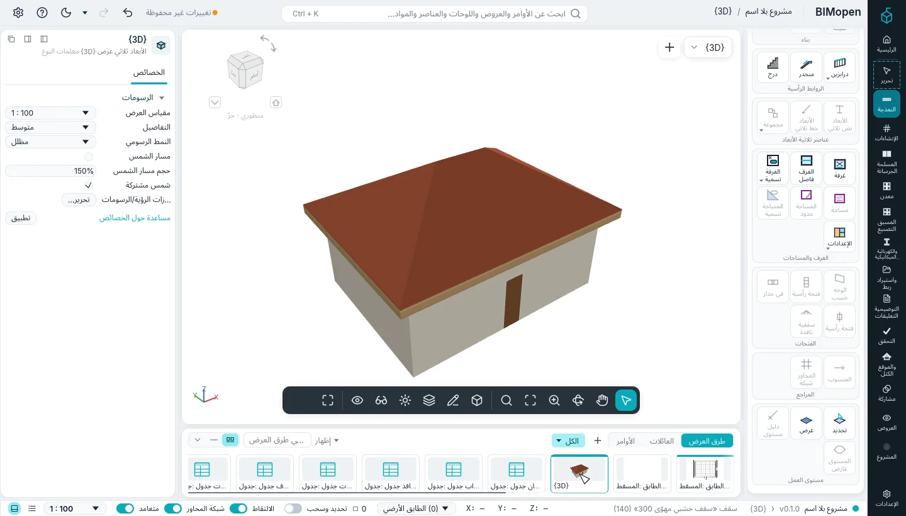
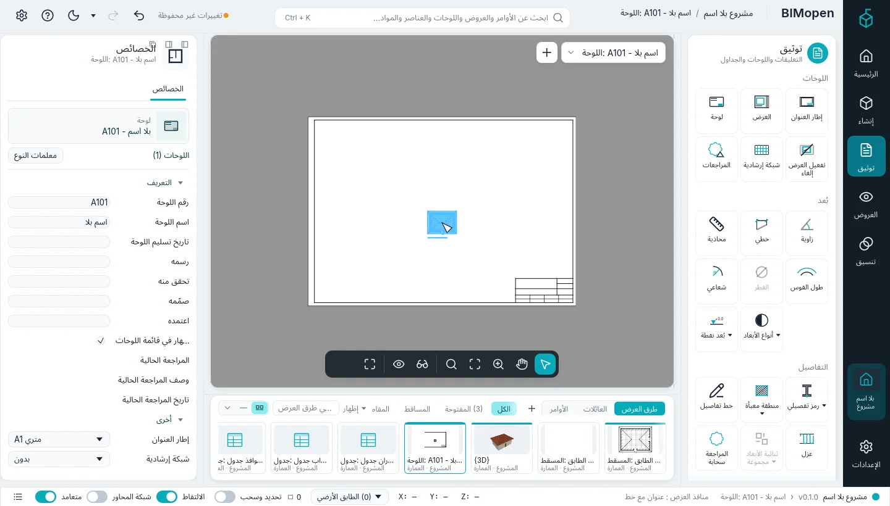

البدء
يبيّن هذا الفصل كيفية تشغيل BIMopen على سطح المكتب وفي المتصفح، وما يحتويه المشروع النموذجي، وكيفية نمذجة أول منزل صغير: أربعة جدران وباب ونافذة وأرضية وسقف وعرض ثلاثي الأبعاد ولوحة عليها المسقط. يستغرق ذلك نحو عشر دقائق.
تشغيل BIMopen على سطح المكتب
يُبنى BIMopen من شفرته المصدرية باستخدام Rust، الإصدار 1.90 أو أحدث. وعلى Linux تحتاج الواجهة الرسومية أيضًا إلى ملفات التطوير الخاصة بـ xkbcommon وWayland وGTK 3.
sudo apt-get install -y libxkbcommon-dev libwayland-dev libgtk-3-dev # Debian, Ubuntu
cargo run --release -p bimopen -- --sample # opens the sample house
اسم البرنامج bimopen. وهو يقبل ملفًا لفتحه وخيارًا واحدًا:
| الأمر | ما يفتحه |
|---|---|
bimopen |
مشروعًا جديدًا فارغًا |
bimopen --sample |
المنزل النموذجي |
bimopen house.bimopen |
المشروع المحفوظ في house.bimopen |
bimopen --no-splash |
مثل bimopen، دون شاشة البدء |
يمكنك أيضًا فتح مشروع بسحب ملف .bimopen من مدير الملفات إلى النافذة.
شاشة البدء
أثناء تحميل BIMopen تظهر شاشة البدء: نافذة بلا إطار في وسط الشاشة، فيها الاسم والإصدار ومرحلة التحميل الجارية مع نسبتها المئوية، وخط فيروزي يتقدّم على طول الحافة السفلية. المراحل حقيقية (التفضيلات، الخطوط، بطاقة الرسوميات، العائلات، فتح المشروع)؛ تبقى الشاشة نصف ثانية على الأقل كي لا تومض، ثم تتلاشى عندما تصبح النافذة الرئيسية جاهزة. تتحدث باللغة المختارة في التطبيق، وإلا بلغة النظام إن كانت إحدى اللغات الست، وإلا بالإنجليزية.
لإخفائها ألغِ تحديد الخيارات ▸ عام ▸ إظهار شاشة البدء (يتذكر BIMopen ذلك)، أو شغّل
bimopen --no-splash. في Wayland يقرّر المُركِّب مكان ظهور النافذة (عادةً في الوسط).
اللغة والسمة
في المرة الأولى يتحدث BIMopen لغة نظام التشغيل إن كانت إحدى لغاته الست (الإيطالية والإنجليزية والألمانية والفرنسية والإسبانية والعربية)، وإلا فالإنجليزية. لتغييرها انقر الترس في طرف الشريط العلوي (خيارات) واختر اللغة تحت واجهة المستخدم. تتغير الواجهة فورًا.
وفي خيارات تختار أيضًا السمة، فاتح أو داكن (وتبدّلها أيضًا الشمس أو القمر في الشريط العلوي)، وما إذا كانت خلفية العروض معكوسة (عكس لون الخلفية: عروض داكنة بخطوط فاتحة). واختيار السمة الداكنة يعكس الخلفية أيضًا، ويمكنك إلغاء ذلك. في التشغيل الأول يستخدم BIMopen السمة الداكنة مع خلفية معكوسة، ويتذكر اللغة والسمة والخلفية للمرة التالية.
تشغيل BIMopen في المتصفح
نسخة الويب هي البرنامج نفسه مُصرَّفًا للمتصفح. افتح atsanna.github.io/bimopen-site/app/: يبدأ بالمنزل النموذجي. لا حاجة إلى تثبيت أي شيء، ويبقى المشروع في متصفحك: فهو لا يُرسَل إلى أي مكان.
يقبل العنوان الخيارات التالية، ويمكن الجمع بينها بـ &:
| العنوان | الأثر |
|---|---|
app/?lang=de |
يفتح بالألمانية في هذه الزيارة (it، en، de، fr، es، ar) |
app/?empty |
يبدأ بمشروع جديد فارغ بدلًا من النموذج |
app/?webgl |
يرسم باستخدام WebGL2 حتى حيث يتوفر WebGPU |
يجب أن يدعم المتصفح WebGPU أو WebGL2. وفي المتصفح تعمل بعض الأمور بشكل مختلف:
- لا يستطيع فتح… عرض نافذة حوار لاختيار الملف: اسحب ملف
.bimopenإلى الصفحة لفتحه؛ - حفظ وعمليات التصدير تنزّل الملف باسم المشروع.
لبناء نسخة الويب بنفسك:
cargo xtask web # builds dist/web
python3 -m http.server 8080 -d dist/web # then open http://localhost:8080
يحتاج cargo xtask web إلى الهدف wasm32-unknown-unknown في Rust وإلى الأمر wasm-bindgen
بالإصدار المكتوب في Cargo.lock؛ ومع تثبيت wasm-opt من binaryen تصبح النتيجة أصغر حجمًا.
المشروع النموذجي
يعرض المنزل النموذجي معظم ما يستطيع BIMopen فعله. افتحه عبر قائمة التطبيق ▸ مشروع نموذجي
(قائمة التطبيق هي علامة BIMopen أعلى الشريط الجانبي)، أو بالأمر bimopen --sample، أو بكتابة sample في سطر الأوامر.
يحتوي على:
- منسوبين، لكل منهما مسقطه، وخمسة خطوط شبكة محاور؛
- أربعة عشر جدارًا من أربعة أنواع، بطبقات، متصلة عند الزوايا؛
- ستة أبواب واثنتي عشرة نافذة، موسومة في المساقط؛
- أرضيتين، وسقفًا مائلًا، ودرجًا بدرابزينه، وواجهة ستارية لواجهة محل؛
- أثاثًا وأدوات صحية، وثماني غرف ملونة حسب الاستخدام، مع وسيلة إيضاح؛
- مقطعًا، وواجهة، ومخطط مساحات، وعرضًا ثلاثي الأبعاد محفوظًا، وعرضًا ثنائي الأبعاد حرًا فيه تفصيل جدار؛
- أبعادًا، وملاحظات نصية، وجداول الجدران والأبواب والنوافذ والغرف والمواد؛
- موقعه في كالياري، حيث يقع عنوانه: الشمس والظلال هي شمس تلك المدينة وظلالها.
Tip
النموذج مكان جيد لتجربة أداة قبل استخدامها في مشروعك: فنموذج جديد على بعد نقرة واحدة دائمًا، ولا يُحفظ أي شيء تغيّره فيه ما لم تحفظه بنفسك.
منزلك الأول
تبدأ الخطوات التالية من مشروع فارغ وتنتهي بلوحة. تسمّي كل خطوة ما يجب النقر عليه في نمط الواجهة BIMopen، وهو النمط الذي يبدأ به BIMopen؛ ويشرح فصل الواجهة كل جزء من النافذة.
1. ابدأ مشروعًا جديدًا
- انقر علامة BIMopen أعلى الشريط الجانبي: تُفتح قائمة التطبيق.
- انقر جديد ▸ مشروع…. تقترح نافذة الحوار مشروع جديد القالب الافتراضي لـ BIMopen: انقر موافق.

للمشروع الجديد منسوبان، الطابق الأرضي والطابق الأول، ومسقط لكل منهما، والعرض ثلاثي الأبعاد الافتراضي. لا جدران فيه بعد. أما أنواع الجدران والأبواب والنوافذ والأرضيات والأسقف فجاهزة للاستخدام.
2. افتح مسقط الطابق الأرضي
في شريط العروض تحت منطقة الرسم، انقر الصورة المصغرة المسقط: الطابق الأرضي. يُفتح المسقط في منطقة الرسم، ويعرض الشريط العلوي ومحدد العرض المسقط: الطابق الأرضي.
Note
يعرض العروض في الشريط الجانبي أيضًا فهرس المشروع، شجرة كل العروض: وفيه تعرض النقرة الواحدة على عرض خصائصه في لوحة العنصر دون فتحه، ويفتحه النقر المزدوج.
3. ارسم أربعة جدران
- في أدوات إنشاء، وهو عنصر الشريط الجانبي الذي يفتح به BIMopen، انقر جدار في مجموعة بناء (وإن كانت لوحة الأدوات مطوية فانقر أولًا إنشاء في الشريط الجانبي). تظهر البطاقة السياقية رسم جدار أعلى لوحة الأدوات، ويعرض شريط الخيارات فوق العرض إعدادات الجدار، وتعرض لوحة العنصر نوع الجدار التالي، جدار خارجي - طوب طيني 300 + عزل خارجي.
- في شريط الحالة، فعّل متعامد: تبقى الجدران أفقية أو رأسية.
- انقر في المسقط حيث تقع الزاوية الأولى. يطلب شريط الحالة النقطة التالية:
WALL next point [Esc to finish]:.

- انقر الزوايا الثانية والثالثة والرابعة. أثناء تحريك الفأرة يظهر طول الجدار الجاري رسمه وزاويته بجانبه.
- انقر الزاوية الأولى مرة أخرى: تتصل الجدران الأربعة عند الزوايا.
- اضغط Esc لإيقاف السلسلة، ثم Esc مرة أخرى لإنهاء الأداة.
Tip
يمكنك رسم الجدران نفسها بكتابة زواياها بالأمتار:
wall 0,0 10,0 10,6 0,6 c. الحرف c في النهاية يغلق السلسلة. انظر
سطر الأوامر و MCP.
4. أضف بابًا ونافذة
- انقر إنشاء ▸ بناء ▸ باب، ثم انقر على جدار حيث يقع الباب. يوضع الباب في الجدار، الذي
يُقطع حوله. ويؤكد سجل الأوامر ذلك:
Door «Single swing door 80x210» in wall …. - اضغط Esc: تنتهي الأداة وتختفي البطاقة السياقية.
- انقر إنشاء ▸ بناء ▸ نافذة، وانقر على جدار آخر، ثم اضغط Esc.
لا يمكن وضع باب أو نافذة إلا في جدار: فبعد نقرة بعيدة عن الجدران يجيب سطر الأوامر
no wall at that point ولا يوضع شيء.
5. أضف أرضية وسقفًا
- انقر إنشاء ▸ بناء ▸ بلاط أرضيات. يُفتح وضع الرسم التخطيطي: البطاقة السياقية تحرير | إنشاء حدود الأرضية، مع تفعيل اختيار الجدران.
- ضع المؤشر فوق جدار واضغط Tab: تُبرز الجدران الأربعة. انقر: توضع خطوطها على الوجوه الداخلية للجدران.
- انقر إنهاء وضع التحرير: تُنشأ الأرضية ويعطي سجل الأوامر مساحتها.
- انقر إنشاء ▸ بناء ▸ سقف. يعود اختيار الجدران مفعّلًا؛ وفي شريط الخيارات يحدد الميل (محدد) والبروز (500 mm افتراضيًا).
- اضغط Tab فوق جدار، وانقر، ثم إنهاء وضع التحرير: يغطي الجدران سقف رباعي المنحدرات بميل 30°، مع البروز من جميع الجهات.

يشرح الأرضيات والأسقف والسلالم والمكونات المزيد عن وضع الرسم التخطيطي.
6. شاهده بالأبعاد الثلاثة
انقر الصورة المصغرة {3D} في شريط العروض. يُفتح العرض ثلاثي الأبعاد الافتراضي، {3D}. اسحب بزر الفأرة الأيمن (أو بـ Shift والزر الأوسط) للدوران المداري، واسحب بالزر الأوسط لتحريك العرض، وأدر العجلة للتكبير والتصغير؛ أما الزر الأيسر فيحدد، كما في المساقط. يضع Home النموذج كله داخل العرض.

7. ضع المسقط على لوحة
- انقر توثيق في الشريط الجانبي، ثم لوحة في مجموعة اللوحات. تسرد نافذة الحوار لوحة جديدة إطارات العناوين: بلا إطار، أو A0 أو A1 أو A2 أو A3، مع مقاساتها بالمليمترات.
- انقر موافق. تُنشأ اللوحة بالرقم الحر التالي (A101 للأولى، ثم A102…) وتُفتح.
- انقر توثيق ▸ اللوحات ▸ العرض. تسرد نافذة الحوار العروض العروض التي لم توضع بعد على لوحة.
- اختر المسقط: الطابق الأرضي وانقر إضافة العرض إلى اللوحة. يتبع المؤشرَ مستطيلٌ بحجم المسقط: انقر على اللوحة حيث يوضع المسقط. يوضع بمقياسه الخاص، 1 : 100، كإطار عرض، ويبقى محددًا.

8. التراجع والإعادة والحفظ
- يتراجع Ctrl+Z عن آخر تعديل (هنا يختفي إطار العرض)؛ ويعيده Ctrl+Y. وتقوم أسهم الشريط العلوي، تراجع وإعادة، بالشيء نفسه.
- يحفظ Ctrl+S المشروع، كما يفعل النقر على حالة الحفظ في الشريط العلوي. والمشروع الذي لم يُحفظ قط يطلب اسم ملف أولًا؛ ويكون امتداد الملف
.bimopen. وفي المتصفح يُنزَّل الملف.
يعرض الشريط العلوي تغييرات غير محفوظة ما دامت هناك تعديلات تحتاج إلى الحفظ، ومحفوظ بعد الحفظ.
ماذا بعد
- يصف فصل الواجهة كل جزء من النافذة.
- يسرد فصل اختصارات لوحة المفاتيح المفاتيح والاختصارات المكونة من حرفين،
مثل
WAللجدار. - يبيّن فصل سطر الأوامر و MCP كيفية كتابة الأوامر وتشغيل البرامج النصية وترك وكيل ينمذج نيابة عنك.